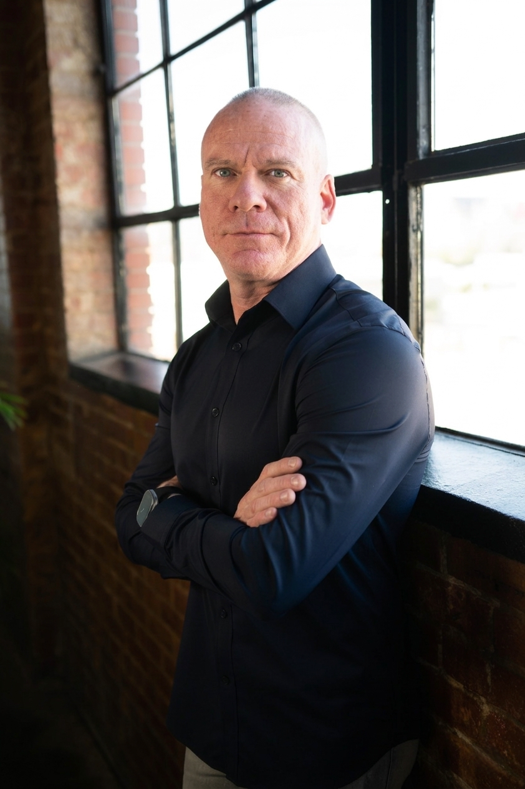

Behind the show
THE PEOPLE BEHIND VOICES of OKC.
VOICES of OKC is built by more than a guest list. It is shaped by a host rooted in community work, students gaining real production experience, and a creative partner helping bring each story to life with clarity and care.
JED CHAPPELL
Jed Chappell is the Founder and CEO of City Center and the host of VOICES of OKC. Through City Center, he has helped build a place where practical support, mentorship, and dignity meet for families and youth across Oklahoma City.
On VOICES of OKC, he brings a grounded perspective shaped by personal redemption and years of community work. The result is a style of conversation that is clear, human, and unhurried enough to let substance rise to the surface.
Whether he is sitting with civic leaders, founders, public servants, or neighbors whose stories deserve room, Jed helps frame each episode around what matters most: the people, values, and decisions shaping the future of this city.
Student production
REAL EXPERIENCE. REAL RESPONSIBILITY. REAL GROWTH.
VOICES of OKC is produced alongside students at City Center, giving the next generation a front-row seat to the minds of people building things that matter. They are not standing on the edge of the room. They are learning how the work is made by helping make it.


Storytelling
Students receive hands-on training in interviewing, recording, editing, and media production.
Confidence
Each episode becomes a real-world learning experience rooted in purpose, creativity, and confidence.
Civic Access
Students engage leaders across Oklahoma City and gain a clearer sense of how thoughtful conversations are built.
Future Skills
The work highlights the strength of their community while helping students develop practical skills for the future.

BO WRIGHT + BONUS CREATIVE
Bonus Creative is led by Bo Wright, an Oklahoma-based filmmaker and video producer whose work spans branded films, church media, nonprofit storytelling, and documentary content.
With more than 20 years in the industry, Bo has written, directed, filmed, and edited projects ranging from award-winning documentaries to client work for organizations including the Butterfield Foundation, Dale Rogers Training Center, and Lakewood Church.
His approach is lean and hands-on, carrying a project from concept to final cut with clarity, craft, and care. That kind of discipline makes him a strong creative fit for a show that values substance over noise.
Recognition: 2023 Oklahoma Governor's Award of Excellence for Media.